Intermedio · Capítulo 03
Crear módulos y operaciones
Crea una capacidad propia con schemas explícitos y agrúpala en un módulo que el host registra antes del arranque.
Cómo se incorpora una extensión

Define el descriptor, implementa Operation, agrupa las capacidades en un OperationBundle y regístralo antes de construir el motor.
Qué significa módulo virtual en este manual
El motor conecta módulos lógicos mediante OperationBundle. Aquí llamamos “virtual” a esa agrupación de capacidades: no necesita un servicio, una base propia ni un crate por operación.
Puedes declarar el módulo dentro de tu aplicación o llevarlo a un crate externo. En ambos casos se compila con el host; no se interpreta Rust desde JSON ni se carga código dinámicamente. El workflow referencia las operaciones por identidad y revisión.
| Pieza | Lo que declara |
|---|---|
| ModuleDescriptor | ID y versión del módulo, versión del protocolo y lista de exports. |
| OperationDescriptor | Revisión exacta, schemas de config/input/output, efectos y recursos. |
| Operation | Código que recibe una Invocation y devuelve OperationOutput o OperationError. |
| OperationBundle | Descriptor del módulo, operaciones compartidas e inspectores de efectos opcionales. |
1. Crea un módulo externo
La extensión de ejemplo depende de workflow-forge-protocol y de JSON, no del engine. Dentro del proyecto del manual su manifest es:
[package]
name = "modulo-saludos"
version = "0.1.0"
edition = "2024"
publish = false
[dependencies]
workflow-forge-protocol = { path = "../../../crates/protocol" }
serde_json = "1"La ruta relativa apunta al checkout desde manual/ejemplos/modulo-saludos. En tu proyecto ajusta esa ruta y agrega la extensión como dependencia del host.
2. Implementa el contrato completo
La operación manual.saludos.crear recibe un nombre como string y una configuración con prefijo. Devuelve otro string. Es Pure/Safe porque no consulta ni modifica sistemas externos.
use serde_json::json;
use std::sync::Arc;
use workflow_forge_protocol::*;
struct Saludar {
descriptor: OperationDescriptor,
}
impl Operation for Saludar {
fn descriptor(&self) -> &OperationDescriptor {
&self.descriptor
}
fn execute<'a>(&'a self, _: OperationContext, invocation: Invocation) -> OperationFuture<'a> {
Box::pin(async move {
let Some(nombre) = invocation.input.as_str() else {
return Err(OperationError {
code: "manual.saludos.input".into(),
class: ErrorClass::InvalidInput,
certainty: EffectCertainty::NotApplied,
message: "Se esperaba un nombre de tipo string".into(),
});
};
let Some(prefijo) = invocation.config["prefijo"].as_str() else {
return Err(OperationError {
code: "manual.saludos.config".into(),
class: ErrorClass::InvalidInput,
certainty: EffectCertainty::NotApplied,
message: "Falta el prefijo de tipo string".into(),
});
};
Ok(OperationOutput::json(json!(format!("{prefijo}{nombre}"))))
})
}
}
pub fn operaciones() -> OperationBundle {
let revision = OperationRevision::new("manual.saludos.crear", "1", "r1");
let descriptor = OperationDescriptor {
revision: revision.clone(),
schema_dialect: SCHEMA_DIALECT.into(),
config_schema: json!({
"$schema": SCHEMA_DIALECT, "type": "object",
"required": ["prefijo"], "additionalProperties": false,
"properties": {"prefijo": {"type": "string", "maxLength": 64}}
}),
input_schema: json!({"$schema": SCHEMA_DIALECT, "type": "string", "maxLength": 128}),
output_schema: json!({"$schema": SCHEMA_DIALECT, "type": "string", "maxLength": 192}),
effect: EffectKind::Pure,
repetition: Repetition::Safe,
reconciliation: false,
required_resources: Default::default(),
description: "Construye un saludo sin producir efectos externos".into(),
examples: vec![
json!({"config":{"prefijo":"Hola, "},"input":"Rafael","output":"Hola, Rafael"}),
],
};
OperationBundle {
module: ModuleDescriptor {
id: "manual.saludos".into(),
version: "1".into(),
protocol_version: PROTOCOL_VERSION,
exports: vec![revision],
},
operations: vec![Arc::new(Saludar { descriptor })],
inspectors: vec![],
}
}El objeto Saludar es compartido y conserva un descriptor inmutable. Cada llamada recibe sus datos en Invocation. El future boxed permite registrar implementaciones distintas como Arc<dyn Operation>.
3. Regístralo y úsalo
let mut builder = WorkflowBuilder::standard();
builder.register_bundle(modulo_saludos::operaciones())?;
let runtime = EngineRuntime::boot(builder.build()?, BootOptions::default()).await?;
let app = runtime.application();El registro comprueba exports, revisiones y contratos del bundle. Un conflicto no se resuelve por “el último gana”. Ejecuta el host incluido:
cargo run --manifest-path manual/ejemplos/Cargo.toml --locked --bin modulos{"saludo":"Hola, Rafael"}4. Haz crecer el módulo sin acoplar el engine
- Añade operaciones pequeñas con nombres estables:
empresa.clientes.buscar,empresa.pedidos.crear. El namespace por sí solo no concede permisos. - Inyecta clientes, pools o puertos de negocio en la factoría. Constrúyelos una vez; no abras un cliente nuevo por invocación.
- Mantén validación y traducción del SDK en el Adapter. La decisión de qué paso sigue permanece en el workflow.
- Usa
OperationContextpara secretos, artefactos, deadline y cancelación. No accedas al store interno para forzar transiciones. - Si añades telemetría con un Decorator, conserva input, identidad, salida y certeza. No agregues un segundo retry oculto.
- Para extender infraestructura, implementa el puerto específico y selecciónalo desde el host. Un OperationBundle no reemplaza el ExecutionStore.
5. Versiona y retira de forma explícita
| Cambio | Acción |
|---|---|
| Cambias implementación, SDK o configuración semántica del proveedor. | Publica otra revisión de implementación y conserva la anterior para los runs que la usan. |
| Cambias incompatiblemente los schemas, recursos o garantías. | Publica un contrato nuevo y migra las definiciones consumidoras. |
| Cambias nodos, config o bindings de un workflow. | Usa otra revisión del workflow. |
| Solo cambias posiciones del editor. | Conserva la metadata en presentation; no cambia la semántica ejecutada. |
Para retirar una revisión: deja de usarla en nuevas definiciones, termina o resuelve sus ejecuciones pendientes y conserva la implementación mientras haga falta para recuperación. Este perfil no ofrece hot reload ni unloading de plugins.